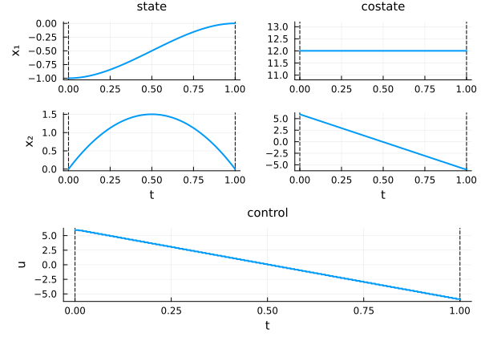

NLP and DOCP manipulations
We describe here low-level operations related to the discretized optimal control problem. The standard way to solve an OCP is to call solve(ocp), available in three modes of increasing abstraction:
- Descriptive mode:
solve(ocp; grid_size=100, ...)— highest level, uses symbols and plain values (see basic usage) - Explicit mode:
solve(ocp; discretizer=disc, modeler=mod, solver=sol)— uses strategy instances as keyword arguments, missing components are filled in automatically (see explicit mode) - Canonical mode:
solve(ocp, init, disc, mod, solv)— all components passed as positional arguments
This tutorial goes one level below the canonical mode and exposes its elementary steps manually. This is useful when you want to:
- Use your own NLP solver directly
- Access and inspect the NLP model
- Benchmark different components separately
- Fine-tune each step of the resolution
Let us load the packages.
using OptimalControl
using PlotsWe define a simple test problem: a double integrator with minimal control energy.
ocp = @def begin
t ∈ [0, 1], time
x ∈ R², state
u ∈ R, control
x(0) == [ -1, 0 ]
x(1) == [ 0, 0 ]
ẋ(t) == [ x₂(t), u(t) ]
∫( 0.5u(t)^2 ) → min
endStep-by-step resolution with OptimalControl
We now perform the resolution step by step, using OptimalControl strategy instances.
Step 1: Build the initial guess
First, we build an initial guess for the problem. Here we pass nothing to use the default initialization. For more options (constant values, time-dependent functions, warm start from a previous solution), see the initial guess documentation and the @init macro.
init = build_initial_guess(ocp, nothing)Step 2: Discretize the OCP
We create a discretizer strategy and use it to discretize the optimal control problem into a DOCP.
discretizer = OptimalControl.Collocation(grid_size=100, scheme=:trapeze)
docp = discretize(ocp, discretizer)The docp is a DiscretizedModel that contains information about the discretization, including a copy of the original OCP.
Step 3: Build the NLP model
Next, we create a modeler strategy and build the NLP model from the discretized problem.
modeler = OptimalControl.ADNLP(backend=:optimized)
nlp = nlp_model(docp, init, modeler)The nlp is an ADNLPModel (from the NLPModels ecosystem) representing the discretized nonlinear programming problem. The full list of options for each strategy (Collocation, ADNLP, etc.) is described in Strategy options.
Step 4: Solve the NLP
We have two approaches to solve the NLP problem.
Approach A: Using OptimalControl solver wrapper
We can create an OptimalControl solver strategy and use it to solve the NLP:
using NLPModelsIpopt
solver = OptimalControl.Ipopt(print_level=5, tol=1e-8, mu_strategy="adaptive")
nlp_sol = solve(nlp, solver; display=true)This is Ipopt version 3.14.19, running with linear solver MUMPS 5.8.2.
Number of nonzeros in equality constraint Jacobian...: 804
Number of nonzeros in inequality constraint Jacobian.: 0
Number of nonzeros in Lagrangian Hessian.............: 101
Total number of variables............................: 303
variables with only lower bounds: 0
variables with lower and upper bounds: 0
variables with only upper bounds: 0
Total number of equality constraints.................: 204
Total number of inequality constraints...............: 0
inequality constraints with only lower bounds: 0
inequality constraints with lower and upper bounds: 0
inequality constraints with only upper bounds: 0
iter objective inf_pr inf_du lg(mu) ||d|| lg(rg) alpha_du alpha_pr ls
0 5.0000000e-03 1.10e+00 8.67e-15 0.0 0.00e+00 - 0.00e+00 0.00e+00 0
1 6.0023829e+00 2.22e-16 1.78e-15 -11.0 6.04e+00 - 1.00e+00 1.00e+00h 1
Number of Iterations....: 1
(scaled) (unscaled)
Objective...............: 6.0023829460295755e+00 6.0023829460295755e+00
Dual infeasibility......: 1.7763568394002505e-15 1.7763568394002505e-15
Constraint violation....: 2.2204460492503131e-16 2.2204460492503131e-16
Variable bound violation: 0.0000000000000000e+00 0.0000000000000000e+00
Complementarity.........: 0.0000000000000000e+00 0.0000000000000000e+00
Overall NLP error.......: 1.7763568394002505e-15 1.7763568394002505e-15
Number of objective function evaluations = 2
Number of objective gradient evaluations = 2
Number of equality constraint evaluations = 2
Number of inequality constraint evaluations = 0
Number of equality constraint Jacobian evaluations = 2
Number of inequality constraint Jacobian evaluations = 0
Number of Lagrangian Hessian evaluations = 1
Total seconds in IPOPT = 2.468
EXIT: Optimal Solution Found.Approach B: Using external NLP solvers directly
Alternatively, we can use NLP solvers directly from their respective packages. For instance, with NLPModelsIpopt.jl:
using NLPModelsIpopt
nlp_sol_ipopt = ipopt(nlp; print_level=5, mu_strategy="adaptive", tol=1e-8, sb="yes")This is Ipopt version 3.14.19, running with linear solver MUMPS 5.8.2.
Number of nonzeros in equality constraint Jacobian...: 804
Number of nonzeros in inequality constraint Jacobian.: 0
Number of nonzeros in Lagrangian Hessian.............: 101
Total number of variables............................: 303
variables with only lower bounds: 0
variables with lower and upper bounds: 0
variables with only upper bounds: 0
Total number of equality constraints.................: 204
Total number of inequality constraints...............: 0
inequality constraints with only lower bounds: 0
inequality constraints with lower and upper bounds: 0
inequality constraints with only upper bounds: 0
iter objective inf_pr inf_du lg(mu) ||d|| lg(rg) alpha_du alpha_pr ls
0 5.0000000e-03 1.10e+00 8.67e-15 0.0 0.00e+00 - 0.00e+00 0.00e+00 0
1 6.0023829e+00 2.22e-16 1.78e-15 -11.0 6.04e+00 - 1.00e+00 1.00e+00h 1
Number of Iterations....: 1
(scaled) (unscaled)
Objective...............: 6.0023829460295755e+00 6.0023829460295755e+00
Dual infeasibility......: 1.7763568394002505e-15 1.7763568394002505e-15
Constraint violation....: 2.2204460492503131e-16 2.2204460492503131e-16
Variable bound violation: 0.0000000000000000e+00 0.0000000000000000e+00
Complementarity.........: 0.0000000000000000e+00 0.0000000000000000e+00
Overall NLP error.......: 1.7763568394002505e-15 1.7763568394002505e-15
Number of objective function evaluations = 2
Number of objective gradient evaluations = 2
Number of equality constraint evaluations = 2
Number of inequality constraint evaluations = 0
Number of equality constraint Jacobian evaluations = 2
Number of inequality constraint Jacobian evaluations = 0
Number of Lagrangian Hessian evaluations = 1
Total seconds in IPOPT = 0.002
EXIT: Optimal Solution Found.Or with MadNLP.jl:
using MadNLP
nlp_sol_madnlp = madnlp(nlp; print_level=MadNLP.ERROR, tol=1e-8)Note that MadNLP can also be used via the OptimalControl wrapper OptimalControl.MadNLP(...), just like OptimalControl.Ipopt(...) above. The full list of available solvers is given in the explicit mode documentation.
Step 5: Build the OCP solution
Finally, we build the optimal control solution from the NLP solution and plot it. Note that the multipliers from the NLP solver are used to compute the costate.
sol = ocp_solution(docp, nlp_sol, modeler)
plot(sol)
Canonical solve
All the steps above are exactly what the canonical solve performs internally. They can be condensed into a single call:
sol = solve(ocp, init, discretizer, modeler, solver; display=false)
plot(sol)This is the canonical mode of solve (Layer 3): all components are fully specified and passed as positional arguments — no defaults, no auto-completion. The two higher-level modes sit above this:
- Explicit mode — pass strategy instances as keyword arguments; missing components are resolved automatically:
solve(ocp; discretizer=disc, modeler=mod, solver=sol). See explicit mode. - Descriptive mode — pass plain values and symbols; everything is built internally:
solve(ocp; grid_size=100, tol=1e-8). See basic usage.
Initial guess and warm start
For a detailed presentation of all the ways to build an initial guess — constant values, time-dependent functions, warm start from a previous solution, or using the @init macro — see the initial guess documentation.
In the step-by-step approach, the initial guess is passed to nlp_model via build_initial_guess. In canonical mode, it is passed as a positional argument:
init_warm = build_initial_guess(ocp, sol)
sol_warm = solve(ocp, init_warm, discretizer, modeler, solver; display=false)
println("Objective value: ", objective(sol_warm))Objective value: 6.0023829460295755